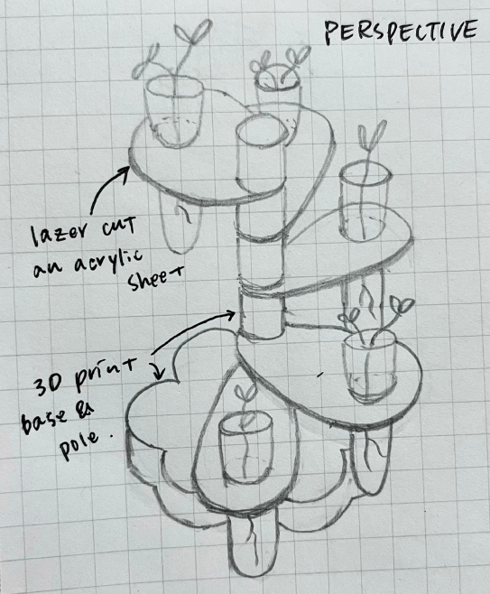

Propagation Station
Design and fabricate a 2-part (silicone) mold. You will need to use the mold to cast at least 4 identical parts (e.g. in plaster). Design your master part in CAD first, then design your mold, then design a mold to cast your mold in. So meta! You need to 3d print your molds-for-molds. Then you need to cast your molds! Then you need to cast your parts!
Sketches

Inspiration
For this assignment I wanted to create a shape of produce and I found these cute pumpkins on Thingiverse.

Reduce Mesh
Once I opened the STL file I realized it was an open mesh object. I used the command ReduceMesh and reduced mesh by 50% twice. The object type turned to closed mesh.